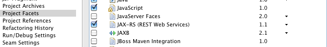
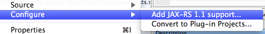
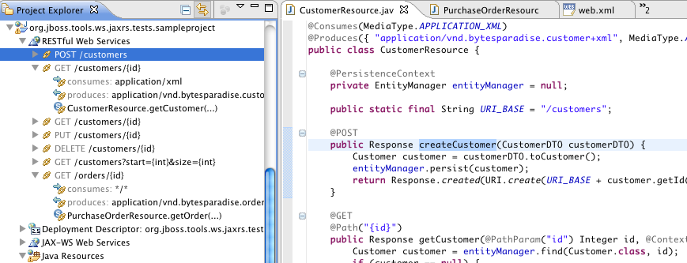

| JAX-RS Tooling |
This release introduces the work done by Xaiver Coulon with
respect to JAX-RS tooling. The JAX-RS tooling is supposed to
complement and extend the JAX-RS tooling found in Eclipse WTP but
also to work on plain Java projects.
The JAX-RS tooling includes a mapping of JAX-RS resources to the
source, validation of JAX-RS constructs and code completion for
JAX-RS annotation values.
The tooling is not yet complete but is very functional and we
are looking forward to get feedback on its current
functionallity and what you would like to see in the future.
|
| Enable JAX-RS 1.1 Support |
If you are using Eclipse WTP and enable the JAX-RS facet then
JBoss Tools JAX-RS support will be added automatically.

You can also enable JBoss Tools JAX-RS support on any Java project
via the Configure > JAX-RS 1.1 Support...

This enablement adds a JAX-RS Builder to your project that
will participate during building of your project to collect JAX-RS
related resources.
|
| RESTFul Web Services Explorer |
When you have enabled JAX-RS a "RESTful Web Services" node in
Project Explorer outlining the various RESTful services that
your project contain. The outline will update when you save
changes to your code.

For each element in the navigator, you'll have the resolved
Http Method (GET, POST, etc.), the URI Path Template
(/customers/{id}, etc.). you'll also have the resolved consumed
and produces mediatypes (based on the annotations at method or type
level)
To navigate easily to the related source code for a JAX-RS
resouce you can double click the elements of the resource explorer
and it will open and highlight the related source code.
|